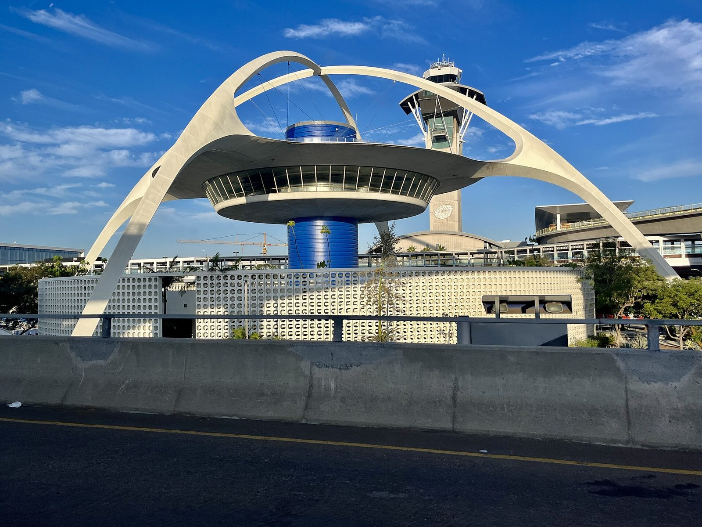

References / Architecture / 481
Theme Building, Los Angeles International Airport
The 1961 landmark at LAX: a saucer-shaped restaurant floating on a blue core under two crossed parabolic arches, like a flying saucer that has landed on four legs.
- Source
- Wikipedia: Theme Building
- Creator
- James Langenheim of Pereira & Luckman (initial design); William Pereira, Charles Luckman, Paul Williams, and Welton Becket
- Made
- Dedicated 25 June 1961; photographed 26 July 2023
- Style
- Googie (agent-proposed, not yet reviewed by a person)
- Moods
- Futuristic, optimistic, sculptural
- Evidence
- Downloaded and inspected Benoît Prieur’s CC0 photograph of July 2023 on Wikimedia Commons, 1920 × 1440 px. Also inspected his second July 2023 view, in which a new people-mover guideway crosses the foreground; it is not stored.
- Reviewed
- Rights
- Open license, stored. License: CC0-1.0. Rights policy
Context
Wikipedia: the building is an example of Space Age design, influenced by Populuxe and later known as Googie. It resembles a flying saucer that has landed on four legs. James Langenheim of Pereira & Luckman made the first design, and a team led by William Pereira and Charles Luckman, with Paul Williams and Welton Becket, completed it. Wikipedia: Theme Building.
The crossed arches look homogeneous but are four concrete legs topped by hollow stucco-covered steel trusses. Vice President Lyndon B. Johnson dedicated the building on 25 June 1961. It became Los Angeles Historic-Cultural Monument no. 570 in 1993. Walt Disney Imagineering designed a retro-futurist interior and lighting for the Encounter Restaurant in 1997. Wikipedia.
Observed
- Two white parabolic arches cross high above the building; each arch splits near the top into a loop and lands on splayed feet at the corners.
- A wide white saucer with a thin upturned rim hangs from the arches; under it, a ring of slanted glass windows wraps a lower disc.
- A ribbed, saturated cobalt-blue cylinder carries the saucer and rises through it to a smaller blue drum on top.
- Thin cables run from the arches to the top drum.
- Around the base, a curved white screen wall is pierced by rows of rounded openings.
- The ground is a deep blue sky with thin cloud; the palette is white, cobalt, and pale concrete. A 1990s control tower and a parking structure stand behind it.
Why it belongs
The building is the style’s space-age imagery taken literally: the saucer, the parabola, and the impression of lift-off.
Its color is more restrained than the roadside signs: white form and one strong blue, so the silhouette does the work.
Borrow
Frame a heading with two crossing parabolic arcs, and hang the content panel from them.
Use a field of small rounded openings, like the screen wall, as a quiet pattern under a loud silhouette.
Measured
Machine-extracted by tools/image-traits.py on . Full measurement.
- Mean chroma
- 0.21
- Palette
- #141b28 17%
- #454c4f 15%
- #1d67b8 10%
- #739cca 5%
- #608fc8 4%
- #4d83c7 4%
- #ddd1b1 4%
- #363b3c 4%

